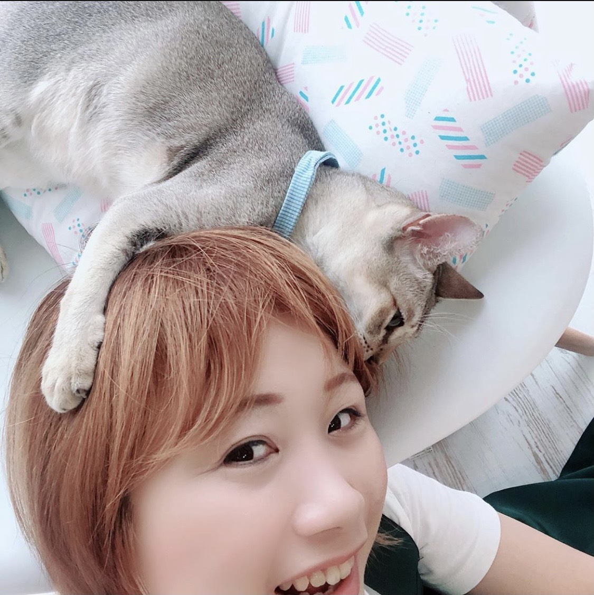

アニマルコミュニケーション
アニマルコミュニケーションとは
アニマルコミュニケーションは、人と動物をつなぐ大切な意識交流です。
イメージ的には、テレパシーとか、チャネリングにちょっと似ている感じがしますよね？
簡単にいうと、動物との言葉のないコミュニケーションです。
-

- 「こうして欲しい。」
- 「どう思っているの？」
- 「どうしてこんな行動をとるの？」
などの人間の気持ちを動物に伝えたり、逆に、動物があなたに伝えたいこと、望んでいることを知るコミュニケーションなのです。
人間の方が悩んでいると思いきや、実は、動物の方が悩んでいる場合もあります。
アニマルコミュニケーションでお互いの気持ちを理解し合うことにより、今よりもっと充実した生活を送ることができます。
もし、あなたがペットの問題行動で悩んでいるのであれば、きっとそれにはペット側の言い分が隠れています。
現に、ただ叱るだけでは、なにも解決、進展していないはずです。
人間の場合もそうですが、なぜ問題行動をおこすのか、その理由がわかれば、一気に解決できてしまいます。
そして、アニマルコミュニケーションの素晴らしさは、亡くなったペットとも会話ができることです。
ペットが伝えたいことや、あなたがペットに伝えきれなかった想いも伝えることができます。
アニマルコミュニケーションは、そんな素晴らしいコミュニケーションツールです。
そして、そのコミュニケーションを得意とするのが、『アニマルコミュニケーター』と言われる存在で、あなたとペットとの心を通じ合わせてくれる仲介役をする事です。
【よく聞かれること】
- 私のことどう思ってるの？
- ご飯は気にいってる？
- ベッドの柔らかさは大丈夫？
- うちの子になって幸せなのかな？
- 留守番をするときにしておいてほしいことある？
- どうしてそんなに鳴くの？
- いたずらするのはどうして？
- もう一匹増やしたらどう思う？
- 一緒にいる他のペットをどう思っている？
- 愛情は伝わっているかな？
- 生まれてきてくれてありがとうって伝えたい